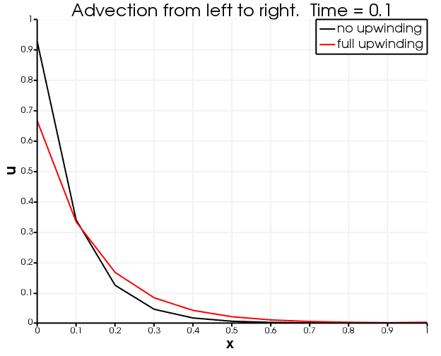
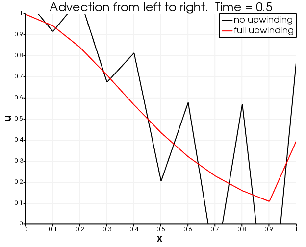

- variableThe name of the variable that this residual object operates on
C++ Type:NonlinearVariableName
Unit:(no unit assumed)
Controllable:No
Description:The name of the variable that this residual object operates on
ConservativeAdvection
Description
The ConservativeAdvection kernel implements an advection term given for the domain () defined as
where is the advecting velocity and the second term on the left hand side represents the strong forms of other kernels. ConservativeAdvection does not assume that the velocity is divergence free and instead applies to the test function in the weak variational form after integrating by parts, which results in the following (without numerical stabilization)
where are the test functions and is the finite element solution of the weak formulation. The first term is the volumetric term and the second term is a surface term describing the advective flux out of the volume. ConservativeAdvection corresponds to the former volumetric term, while the surface term is implemented as a BC in MOOSE (see discussion below regarding OutflowBC and InflowBC).
Without numerical stabilization the corresponding Jacobian is given by
warningwarning
The non-AD version of this kernel does not incorporate key off-diagonal Jacobian terms, namely the "velocity_variable" and "velocity_material" parameters.
Full upwinding
Advective flow is notoriously prone to physically-incorrect overshoots and undershoots, so in many simulations some numerical stabilization is used to reduce or eliminate this spurious behaviour. Full-upwinding Dalen (1979) and Adhikary and Wilkins (2011) is an example of numerical stabilization and this essentially adds numerical diffusion to completely eliminate overshoots and undershoots. Full-upwinding is available in ConservativeAdvection by setting the upwinding_type appropriately.
commentnote
Full upwinding only works for continuous FEM
In DE systems describing more than just advection (e.g., in diffusion-advection problems) full upwinding may be used on the advection alone. In practice, it is reasonably common that these more complicated cases benefit from numerical stabilization on their other terms too, in which case full upwinding could also be used, but this is not mandatory and is not implemented in the ConservativeAdvection Kernel.
For each element in the mesh, full upwinding is implemented in the following way. For each , the quantity is evaluated. If is positive then mass (or heat, or whatever represents) is flowing out of node , and this is called an "upwind" node. If , the residual for node is set to Here is the value of at the node . Define the total mass flowing from the upwind nodes: Similarly, define Mass is conserved if the residual for the downwind nodes is defined to be
Full upwinding adds more numerical diffusion than most other numerical stabilization techniques such as SUPG and TVD. Another problem is that steady-state can be hard to achieve in nonlinear problems where the velocity is not fixed and changes every nonlinear iteration (this does not occur for ConservativeAdvection). On the other hand, full upwinding is computationally cheap.
Example Syntax
ConservativeAdvection can be used in a variety of problems, including advection-diffusion-reaction. The syntax for ConservativeAdvection is demonstrated in this Kernels block from a pure advection test case:
[Kernels<<<{"href": "../../syntax/Kernels/index.html"}>>>]
[udot]
type = TimeDerivative<<<{"description": "The time derivative operator with the weak form of $(\\psi_i, \\frac{\\partial u_h}{\\partial t})$.", "href": "TimeDerivative.html"}>>>
variable<<<{"description": "The name of the variable that this residual object operates on"}>>> = u
[]
[advection]
type = ConservativeAdvection<<<{"description": "Conservative form of $\\nabla \\cdot \\vec{v} u$ which in its weak form is given by: $(-\\nabla \\psi_i, \\vec{v} u)$. Velocity can be given as 1) a variable, for which the gradient is automatically taken, 2) a vector variable, or a 3) vector material.", "href": "ConservativeAdvection.html"}>>>
variable<<<{"description": "The name of the variable that this residual object operates on"}>>> = u
[]
[]The velocity is supplied as a three component vector with order , , and .
Boundary conditions for pure advection
To form the correct equations, the boundary term needs to be included in the BCs block of a MOOSE input file ( is the outward normal to the boundary). An OutflowBC may be used, for instance
[BCs<<<{"href": "../../syntax/BCs/index.html"}>>>]
[allow_mass_out]
type = OutflowBC<<<{"description": "DG upwinding for the convection", "href": "../bcs/OutflowBC.html"}>>>
boundary<<<{"description": "The list of boundary IDs from the mesh where this object applies"}>>> = right
variable<<<{"description": "The name of the variable that this residual object operates on"}>>> = u
velocity<<<{"description": "Velocity vector"}>>> = '1 0 0'
[]
[]Physically this subtracts "fluid mass" (or whatever represents) from the boundary.
For adding the OutflowBC allows "fluid" to flow freely through the boundary. The advective velocity is "blowing fluid" into this boundary, and the OutflowBC is removing it at the correct rate, because the flux through any area is .
On the other hand, including an OutflowBC for isn't usually desirable. Adding the OutflowBC in this case fixes at the boundary to its initial condition. This is because the ConservativeAdvection Kernel is taking fluid from the boundary to the interior of the model, but at the same time the OutflowBC is removing : note that , so the OutflowBC is actually adding fluid at the same rate the ConservativeAdvection Kernel is removing it. The physical interpretation is that something external to the model is adding fluid at exactly the rate specified by the initial conditions at that boundary.
Instead, for users typically want to specify a particular value for an injected flux. This is achieved by using an InflowBC. This adds , where (kg.m.s) is the injection rate. For instance
[BCs<<<{"href": "../../syntax/BCs/index.html"}>>>]
[u_injection_left]
type = InflowBC<<<{"href": "../bcs/InflowBC.html"}>>>
boundary<<<{"description": "The list of boundary IDs from the mesh where this object applies"}>>> = left
variable<<<{"description": "The name of the variable that this residual object operates on"}>>> = u
velocity = '1 0 0'
inlet_conc<<<{"description": "The inlet concentration"}>>> = 1
[]
[]To make impermeable boundaries, either for or , simply use no BC at that boundary. Then for there is no BC to remove fluid from that boundary so the fluid "piles up" there. For the omission of a BC can be thought of setting in an InflowBC.
Comparison of no upwinding and full upwinding
The tests
# ConservativeAdvection with upwinding_type = None
# Apply a velocity = (1, 0, 0) and see a pulse advect to the right
# Note there are overshoots and undershoots
[Mesh<<<{"href": "../../syntax/Mesh/index.html"}>>>]
type = GeneratedMesh
dim = 1
nx = 10
[]
[Variables<<<{"href": "../../syntax/Variables/index.html"}>>>]
[u]
[]
[]
[BCs<<<{"href": "../../syntax/BCs/index.html"}>>>]
[u_injection_left]
type = InflowBC<<<{"href": "../bcs/InflowBC.html"}>>>
boundary<<<{"description": "The list of boundary IDs from the mesh where this object applies"}>>> = left
variable<<<{"description": "The name of the variable that this residual object operates on"}>>> = u
velocity = '1 0 0'
inlet_conc<<<{"description": "The inlet concentration"}>>> = 1
[]
[]
[Materials<<<{"href": "../../syntax/Materials/index.html"}>>>]
[v]
type = GenericConstantVectorMaterial<<<{"description": "Declares material properties based on names and vector values prescribed by input parameters.", "href": "../materials/GenericConstantVectorMaterial.html"}>>>
prop_names<<<{"description": "The names of the properties this material will have"}>>> = v
prop_values<<<{"description": "The values associated with the named properties. The vector lengths must be the same."}>>> = '1 0 0'
[]
[]
[Kernels<<<{"href": "../../syntax/Kernels/index.html"}>>>]
[udot]
type = TimeDerivative<<<{"description": "The time derivative operator with the weak form of $(\\psi_i, \\frac{\\partial u_h}{\\partial t})$.", "href": "TimeDerivative.html"}>>>
variable<<<{"description": "The name of the variable that this residual object operates on"}>>> = u
[]
[advection]
type = ConservativeAdvection<<<{"description": "Conservative form of $\\nabla \\cdot \\vec{v} u$ which in its weak form is given by: $(-\\nabla \\psi_i, \\vec{v} u)$. Velocity can be given as 1) a variable, for which the gradient is automatically taken, 2) a vector variable, or a 3) vector material.", "href": "ConservativeAdvection.html"}>>>
variable<<<{"description": "The name of the variable that this residual object operates on"}>>> = u
[]
[]
[Preconditioning<<<{"href": "../../syntax/Preconditioning/index.html"}>>>]
[smp]
type = SMP<<<{"description": "Single matrix preconditioner (SMP) builds a preconditioner using user defined off-diagonal parts of the Jacobian.", "href": "../preconditioners/SingleMatrixPreconditioner.html"}>>>
full<<<{"description": "Set to true if you want the full set of couplings between variables simply for convenience so you don't have to set every off_diag_row and off_diag_column combination. The single matrix preconditioner defaults this to true for NEWTON and LINEAR solves if no coupling is specified."}>>> = true
[]
[]
[Executioner<<<{"href": "../../syntax/Executioner/index.html"}>>>]
type = Transient
solve_type = LINEAR
petsc_options_iname = '-pc_type'
petsc_options_value = 'lu'
dt = 0.1
end_time = 1
[]
[Outputs<<<{"href": "../../syntax/Outputs/index.html"}>>>]
exodus<<<{"description": "Output the results using the default settings for Exodus output."}>>> = true
[]and
# ConservativeAdvection with upwinding_type = full
# Apply a velocity = (1, 0, 0) and see a pulse advect to the right
# Note that the pulse diffuses more than with no upwinding,
# but there are no overshoots and undershoots and that the
# center of the pulse at u=0.5 advects with the correct velocity
!include no_upwinding_1D.i
[Kernels]
[udot]
type := MassLumpedTimeDerivative
[]
[advection]
velocity = '1 0 0'
upwinding_type = full
[]
[]
describe the same physical situation: advection from left to right along a line. A source at the left boundary introduces into the domain at a fixed rate (using an InflowBC). The right boundary is impermeable (no BC), so when arrives there it starts building up at the boundary. It is clear from the figures below that no upwinding leads to unphysical overshoots and undershoots, while full upwinding results in none of that oscillatory behaviour but instead produces more numerical diffusion.

after 0.1 seconds of advection

after 0.5 seconds of advection
Input Parameters
- advected_quantityAn optional material property to be advected. If not supplied, then the variable will be used.
C++ Type:MaterialPropertyName
Unit:(no unit assumed)
Controllable:No
Description:An optional material property to be advected. If not supplied, then the variable will be used.
- blockThe list of blocks (ids or names) that this object will be applied
C++ Type:std::vector<SubdomainName>
Controllable:No
Description:The list of blocks (ids or names) that this object will be applied
- displacementsThe displacements
C++ Type:std::vector<VariableName>
Unit:(no unit assumed)
Controllable:No
Description:The displacements
- upwinding_typenoneType of upwinding used. None: Typically results in overshoots and undershoots, but numerical diffusion is minimized. Full: Overshoots and undershoots are avoided, but numerical diffusion is large
Default:none
C++ Type:MooseEnum
Controllable:No
Description:Type of upwinding used. None: Typically results in overshoots and undershoots, but numerical diffusion is minimized. Full: Overshoots and undershoots are avoided, but numerical diffusion is large
- velocity_as_variable_gradientGradient of this coupled variable is used to define the advection velocity. Can be supplied instead of velocity material or velocity variable.
C++ Type:std::vector<VariableName>
Unit:(no unit assumed)
Controllable:No
Description:Gradient of this coupled variable is used to define the advection velocity. Can be supplied instead of velocity material or velocity variable.
- velocity_materialVelocity vector given as a material
C++ Type:MaterialPropertyName
Unit:(no unit assumed)
Controllable:No
Description:Velocity vector given as a material
- velocity_scalar_coef1.0Name of material property multiplied against the velocity to scale advection strength.
Default:1.0
C++ Type:MaterialPropertyName
Unit:(no unit assumed)
Controllable:No
Description:Name of material property multiplied against the velocity to scale advection strength.
- velocity_variableVelocity vector
C++ Type:std::vector<VariableName>
Unit:(no unit assumed)
Controllable:No
Description:Velocity vector
Optional Parameters
- absolute_value_vector_tagsThe tags for the vectors this residual object should fill with the absolute value of the residual contribution
C++ Type:std::vector<TagName>
Controllable:No
Description:The tags for the vectors this residual object should fill with the absolute value of the residual contribution
- extra_matrix_tagsThe extra tags for the matrices this Kernel should fill
C++ Type:std::vector<TagName>
Controllable:No
Description:The extra tags for the matrices this Kernel should fill
- extra_vector_tagsThe extra tags for the vectors this Kernel should fill
C++ Type:std::vector<TagName>
Controllable:No
Description:The extra tags for the vectors this Kernel should fill
- matrix_onlyFalseWhether this object is only doing assembly to matrices (no vectors)
Default:False
C++ Type:bool
Controllable:No
Description:Whether this object is only doing assembly to matrices (no vectors)
- matrix_tagssystemThe tag for the matrices this Kernel should fill
Default:system
C++ Type:MultiMooseEnum
Controllable:No
Description:The tag for the matrices this Kernel should fill
- vector_tagsnontimeThe tag for the vectors this Kernel should fill
Default:nontime
C++ Type:MultiMooseEnum
Controllable:No
Description:The tag for the vectors this Kernel should fill
Contribution To Tagged Field Data Parameters
- control_tagsAdds user-defined labels for accessing object parameters via control logic.
C++ Type:std::vector<std::string>
Controllable:No
Description:Adds user-defined labels for accessing object parameters via control logic.
- diag_save_inThe name of auxiliary variables to save this Kernel's diagonal Jacobian contributions to. Everything about that variable must match everything about this variable (the type, what blocks it's on, etc.)
C++ Type:std::vector<AuxVariableName>
Unit:(no unit assumed)
Controllable:No
Description:The name of auxiliary variables to save this Kernel's diagonal Jacobian contributions to. Everything about that variable must match everything about this variable (the type, what blocks it's on, etc.)
- enableTrueSet the enabled status of the MooseObject.
Default:True
C++ Type:bool
Controllable:Yes
Description:Set the enabled status of the MooseObject.
- implicitTrueDetermines whether this object is calculated using an implicit or explicit form
Default:True
C++ Type:bool
Controllable:No
Description:Determines whether this object is calculated using an implicit or explicit form
- save_inThe name of auxiliary variables to save this Kernel's residual contributions to. Everything about that variable must match everything about this variable (the type, what blocks it's on, etc.)
C++ Type:std::vector<AuxVariableName>
Unit:(no unit assumed)
Controllable:No
Description:The name of auxiliary variables to save this Kernel's residual contributions to. Everything about that variable must match everything about this variable (the type, what blocks it's on, etc.)
- search_methodnearest_node_connected_sidesChoice of search algorithm. All options begin by finding the nearest node in the primary boundary to a query point in the secondary boundary. In the default nearest_node_connected_sides algorithm, primary boundary elements are searched iff that nearest node is one of their nodes. This is fast to determine via a pregenerated node-to-elem map and is robust on conforming meshes. In the optional all_proximate_sides algorithm, primary boundary elements are searched iff they touch that nearest node, even if they are not topologically connected to it. This is more CPU-intensive but is necessary for robustness on any boundary surfaces which has disconnections (such as Flex IGA meshes) or non-conformity (such as hanging nodes in adaptively h-refined meshes).
Default:nearest_node_connected_sides
C++ Type:MooseEnum
Controllable:No
Description:Choice of search algorithm. All options begin by finding the nearest node in the primary boundary to a query point in the secondary boundary. In the default nearest_node_connected_sides algorithm, primary boundary elements are searched iff that nearest node is one of their nodes. This is fast to determine via a pregenerated node-to-elem map and is robust on conforming meshes. In the optional all_proximate_sides algorithm, primary boundary elements are searched iff they touch that nearest node, even if they are not topologically connected to it. This is more CPU-intensive but is necessary for robustness on any boundary surfaces which has disconnections (such as Flex IGA meshes) or non-conformity (such as hanging nodes in adaptively h-refined meshes).
- seed0The seed for the master random number generator
Default:0
C++ Type:unsigned int
Controllable:No
Description:The seed for the master random number generator
- use_displaced_meshFalseWhether or not this object should use the displaced mesh for computation. Note that in the case this is true but no displacements are provided in the Mesh block the undisplaced mesh will still be used.
Default:False
C++ Type:bool
Controllable:No
Description:Whether or not this object should use the displaced mesh for computation. Note that in the case this is true but no displacements are provided in the Mesh block the undisplaced mesh will still be used.
Advanced Parameters
- prop_getter_suffixAn optional suffix parameter that can be appended to any attempt to retrieve/get material properties. The suffix will be prepended with a '_' character.
C++ Type:MaterialPropertyName
Unit:(no unit assumed)
Controllable:No
Description:An optional suffix parameter that can be appended to any attempt to retrieve/get material properties. The suffix will be prepended with a '_' character.
- use_interpolated_stateFalseFor the old and older state use projected material properties interpolated at the quadrature points. To set up projection use the ProjectedStatefulMaterialStorageAction.
Default:False
C++ Type:bool
Controllable:No
Description:For the old and older state use projected material properties interpolated at the quadrature points. To set up projection use the ProjectedStatefulMaterialStorageAction.
Material Property Retrieval Parameters
References
- D. Adhikary and A. Wilkins.
Analysis of finite element discretisation schemes for multi-phase Darcy flow.
Defect and Diffusion Forum, 318:33–40, 2011.
doi:10.4028/www.scientific.net/DDF.318.33.[Export]
- V. Dalen.
Simplified Finite-Element Models for Reservoir Flow Problems.
Society of Petroleum Engineers Journal, 19:333–342, 1979.
doi:10.2118/7196-PA.[Export]